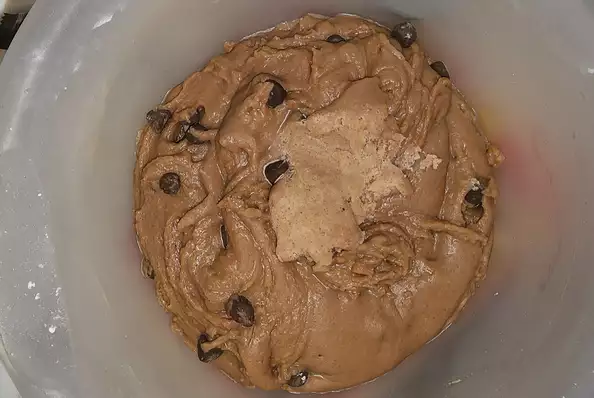

Edible Cookie Dough

Description
Have you ever just wanted to eat cookie dough that you are about to put in the oven, then thought better of it because you didn't want to get Salmonella poisoning? Well now you can! This cookie dough is just for eating. I have made this with friends before and they said that they loved the taste. So do I. The leftovers will keep in the freezer for up to 3 months.
Ingredients
- ¾ cup packed brown sugar
- ½ cup butter
- 1 teaspoon vanilla extract
- ½ teaspoon salt
- 1 cup all-purpose flour
- 2 tablespoons milk
- ½ cup milk chocolate chips
- ½ cup mini chocolate chips
Steps
- Combine brown sugar and butter in a large bowl; beat with an electric mixer until creamy. Beat in vanilla extract and salt. Add flour; mix until a crumbly dough forms. Mix in milk. Fold in milk chocolate chips and mini chocolate chips.
Browse More